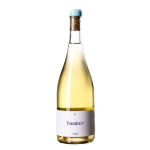
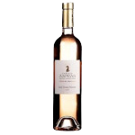
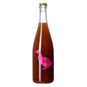
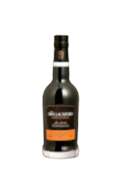

Vinho Branco
O vinho branco pode ser produzido a partir de uvas brancas e tintas,
com método de produção distinta ao do vinho tinto, com sabor frutado
e coloração mais dourada.tre as uvas mais conhecidas produtoras de
vinho branco estão a Chardonnay e a Sauvignon Blanc.

Vinho Tinto
Os vinhos tintos são produzidos por meio da fermentação do suco
extraído de uvas tintas.As principais uvas usadas para fazer
esse tipo de vinho são a Cabernet Sauvignon, Carménère, Malbec,
Merlot, Tempranillo, Pinot Noir, Syrah, entre outras.

Vinho Rosado
O vinho rosado, mais conhecido como rosé, é produzido a partir de uvas
tintas por diferentes estilos de vinificação.Cada vez mais apreciado
pelo sabor, sofisticação e custo-benefício, um destaque para a região
de Provence, na França, principal e mais conhecida região produtora de
vinho rosé no mundo.

Vinho Espumante
Bastante apreciado em celebrações e eventos, Ele é um tipo de vinho produzido
com gás carbônico dissolvido. Também é conhecido como um vinho com “perlage”,
que significa borbulhas.Pode ser produzido a partir de dois processos: Champenoise
(tradicional) e Charmat.As principais uvas que produzem o espumante são Chardonnay
e Pinot Noir

Vinho Licoroso
Os vinhos licorosos mais conhecidos são os fortificados e os de colheita tardia, o vinho
fortificado é uma bebida que tem a fermentação interrompida antes do término pela adição
de aguardente vínica. Ele é caracterizado pela quantidade elevada de teor alcoólico - estima-se
que tenha entre 19% e 22% - além de ser elaborado com alta quantidade de açúcar.Eles são produzidos
por uvas brancas e tintas.